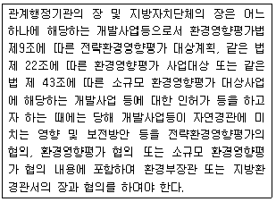
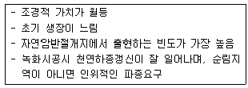
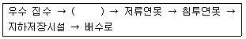
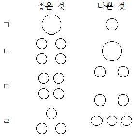
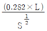
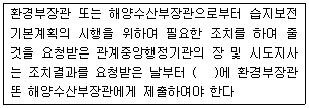
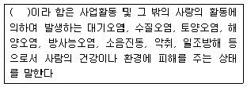
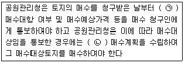
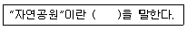
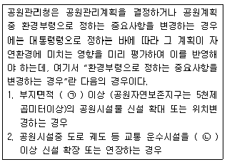

자연생태복원기사(구) (2015-03-08 기출문제)
1과목: 환경생태학개론
1. 대표적인 토양환경의 변화인 토양침식에 관한 설명중 잘못된 것은?
- 지나친 경작이나 방목 등이 원인이다
- 강우량이 적은 지역에서의 토양침식은 사막화를 초래할 수 있다
- 침식이 일어나면 작물재배에 적당한 흙이 가장 먼저 씻겨나간다
- 토양침식에 의해 경작이 불가능한 지역은 감소하게 된다
(정답률: 82%)

2. 맹그로브의 특징을 바르게 설명한 것은?
- 열대 및 아열대 조간대의 습지에 분포한다
- 열대해안의 환초(coral reef)를 형성한다
- 플랑크톤을 섭취하는 동물개체군의 명칭이다
- 최근 백화현상이 문제되고 있다
(정답률: 73%)
3. 다음 생태계의 구조와 기능에 대한 설명으로 적절한 것은?
- 영양단계에 따라 1차생산자, 2차생산자, 소비자, 분해자의 구조를 이룬다
- 생산자는 종속영양자로서 상위 단계에 영양물질을 공급해준다
- 영양단계에서 생물은 여러 단계에 속하는 경우가 많으며 일생 중 영양단계가 변하는 경우가 발생한다
- 독립영양자는 죽은 식물체나 동물체를 무기물로 분해하여 영양물질을 공급한다
(정답률: 51%)
4. 식물의 개화 강도가 일조시간에 둔감하여 광주기와 상관없이 꽃을 피우는 식물을 무엇이라고 하는가?
- 단일식물
- 중일식물
- 장일식물
- 고온식물
(정답률: 69%)
5. 총생산(Pg), 순생산(Pe), 호흡(r)의 관계를 옳게 표현한 식은?
- Pg / Pe = r
- Pe / Pg = r
- Pg = Pe - r
- Pe = Pg - r
(정답률: 65%)
6. 실내오염물 중 유해한 물질 중의 하나이며, 이 물질은 자연적으로 존재하는 방사성 가스로서 가공 석재물이 많은 지하철에서 많이 검출된다. 이것은 무엇인가?
- 황화수소
- 네온
- 아르곤
- 라돈
(정답률: 80%)
7. 적도를 중심으로 남위와 북위 각각 10° 이내의 지역으로 남미의 아마존, 서부아프리카와 인도네시아 등의 지역에 나타나는 식생대는?
- 사막식생
- 툰트라
- 온대초원
- 열대우림
(정답률: 85%)
8. 개체군의 구조 유형 중에서 자연환경조건이 균일하지만 서로 모이기를 싫어하는 개체군들에서 나타나는 분포형은?
- 규칙분포
- 임의분포
- 집중분포
- 고립분포
(정답률: 71%)
9. 다음의 부영양화에 대한 설명 중 옳지 않는 것은?
- 부영양화 현상을 일으키는 주요 영양염류 중 인과 질소가 가장 중요한 요소이다
- 호소가 부영양화 됨에 따라 1차적으로 나타나는 현상으로 원래 순수한 물은 검푸른 색인데, 부유물질이 많을수록 청색에서 녹색을 거쳐 황색으로 변한다
- 빈영양호에서는 규조류와 편모조류, 황갈조류 등이 주로 서식하고 부영양호에서는 녹조류와 남조류의 비중이 커져 이에 따른 색의 변화도 생긴다
- 수심이 얕은 호소에서 부영양화가 진행되면 수초와 식물플랑크톤의 증식이 증가되어 배의 운행을 방해하기도 하고 썩어 냄새를 내기도 한다
(정답률: 40%)
10. 다음 중 염화불화탄소에 대한 설명으로 틀린 것은?
- 불안정한 화합물이다
- 불연성이다
- 독성과 자극이 없다
- 염소, 불소, 탄소를 함유한 합성화합물질이다
(정답률: 59%)
11. 멸종위기에 처한 야생동식물의 보호를 위해 체결한 국제협약은?
- 교토의정서
- London협약
- Basel협약
- CITES협약
(정답률: 77%)
12. 발전소의 열수로 인해 나타날 수 있는 영향과 거리가 먼 것은?
- 안개, 안무의 이상 생성을 유발시킨다
- 수중의 DO농도를 증가시킨다
- 수중 미생물의 생활리듬을 파기하여 이상증식 또는 이상산란 현상을 초래한다
- 호수나 저수지 저층의 인산염, 질산염 등을 상부로 이동시켜 조류의 번식을 촉진시킨다
(정답률: 55%)
13. 담수에서 생태적으로 중요한 환경 요인이 아닌 것은?
- 빛
- 염분농도
- 온도
- 산소
(정답률: 82%)
14. 군집의 구조적 측면에서 같은 표징종을 포함하는 식물의 군집은?
- 우점종
- 군락
- 부수종
- 지표종
(정답률: 66%)
15. 개체군의 상호작용과 관련하여 경쟁적 배제의 원리를 기술한 것이 아닌 것은?
- 가우스의 원리라고도 한다
- 두 개체군 사이에 생태적 지위가 중복될 수 없다는 원리를 말한다
- 양쪽 개체군에 이익을 주지만 그 관계에는 구속성이 없다는 원리를 말한다
- 결과적으로 격렬한 경쟁은 생태적 지위가 어느 정도 중복되었을 때 발생한다
(정답률: 67%)
16. 다음 중 편리공생 관계에 있는 것은?
- 해삼과 숨이고기
- 콩과식물과 뿌리혹박테리아
- 개미와 진딧물
- 참나무류와 겨우살이
(정답률: 54%)
17. 생물종간의 상호작용의 형태 중 A가 B에 일방적으로 의존하여 B에 손해를 끼칠 수 있는 관계는?
- 중립
- 기생
- 상리공생
- 편리공생
(정답률: 86%)
18. 천이는 시간에 따라 어떤 지역에 있는 종들의 방향적이고 계속적인 변화를 의미한다. 수십년이나 수백년이 지난 다음에 종조성에서의 중요한 변화가 발생하지 않는 안정된 군집은?
- 극상군집
- 수관교체
- 사구천이
- 개척군집
(정답률: 86%)
19. 부영양화 정도 및 증상을 감소시키기 위하여 수계에서직접 적용하는 방법으로 적당하지 않는 것은?
- 심층수 폭기
- 수초제거 및 수확
- 영양염류 불활성화
- 체류시간 증가
(정답률: 77%)
20. 다음 중 생물다양성 협약의 내용으로 거리가 먼 것은?
- 유전자원 및 자연서식지 보호를 위한 전략
- 생물다양성 보전과 서식지 개발을 위한 정책
- 생물자원의 접근 및 이익공유에 관한 사항
- 생태계 내에서 생물종 다양성의 역할과 보존에 관한 기술 개발
(정답률: 37%)
2과목: 환경계획학
21. 국토의계획 및 이용에 관한벌률시행령에 의하여 기반시설부담연구별로 기반시설이 설치된 정도를 고려하여 산정된 기반시설 필요 면적률을 건축 연면적당 기반시설 필요 면적으로 환산하는데 사용되는 계수는?
- 지역계수
- 공지환산계수
- 용지환산계수
- 기반시설유발계수
(정답률: 45%)
22. 지속가능한 개발원칙과 관련 없는 것은?
- 미래세대 배려
- 환경부하의 확대
- 시민 참여
- 사회형평성
(정답률: 67%)
23. 다음 설명의 어느 하나에 해당되지 않는 것은?

- 생태 경관 보전지역
- 산림보호법에 의한 공익일지
- 자연공원법 제 2조 제1호 규정에 의한 자연공원
- 습지보전법 제8조 규정에 의하여 지정된 습지보호지역
(정답률: 73%)
24. 환경용량의 개념을 생태학적 관점에서는 세가지 측면에서 살펴볼 수 있다. 다음 중 세 가지 측면에 해당되지 않는 것은?
- 환경의 자정능력
- 지역의 수용용량
- 자원의 지속가능성
- 생태적 안정성
(정답률: 50%)
25. 하천유역의 면적, 지형 등 하천유역의 특성에 따라 수계영향권을 구분하며, 이에 따라 구분된 대권역별 수질 및 수생태계 보전을 위한 기본계획은 몇 년 마다 수립되어야 하는가?
- 3년
- 5년
- 10년
- 20년
(정답률: 46%)
26. 다음 중 자연입지적 토지이용유형별 세부관리방안 중에서 산림 계곡환경 관립방안에 대한 설명이 아닌 것은?
- 생태계 훼손방지 기준 강화
- 주변 자연경관과 조화되는 대비 색상 기준 도입
- 산과 계곡으로의 경관축과 조망점 설정
- 자연환경자원과 조화되는 건축지침 수립
(정답률: 50%)
27. 국토의계획및이용에관한법률에 의한 도시계획의 특성 설명으로 적합하지 않는 것은?
- 도시군관리계획도서 중 계획도는 축적 1/1000 또는 1/5000의 지형도에 도시군관리계획 사항을 명시한 도면으로 작성하여야 한다
- 도시군기본계획의 계획기간은 10년이고 3년마다 재정비한다
- 도시군기본계획 결정의 효력은 관련 규정에 따라 지형도면을 고시한 날부터 발생한다
- 국토의 이용 개발과 보전을 위한 계획의 수립 및 집행등에 필요한 사항을 정하여 공공복리를 증진시키고 국민의 삶의 질을 향상시키는 것을 목적으로 한다
(정답률: 54%)
28. 백두대간 보호에 관한 법률에 의해 지정 관리되는 백두대간보호지역의 구분이 맞는 것은?
- 핵심구역
- 핵심구역, 전이구역
- 핵심구역, 완충구역
- 핵심구역, 완충구역, 전이구역
(정답률: 63%)
29. 다음 중 자연생태복원에 관한 설명으로 옳지 않는 것은?
- 국토의 보전을 기본입장으로 하고 있다
- 재해의 원인이 되는 비탈면 침식의 방지, 토사유출의 방지, 수질정화, 수자원 보전을 포함하고 있다
- 자연생태복원이 어려운 장소에 확실하게 복원하기 위해 식물이 발아 생육하기 적합한 생육환경을 조성하는 것이다
- 식재종은 훼손지역에 새로운 식물사회를 조성하는 방향으로 선정되어야 한다
(정답률: 74%)
30. 환경의 자정능력에 대한 설명으로 틀린 것은?
- 변화에 적응하고 균형을 유지한다
- 수질, 대기, 토양분야에 주로 적용한다
- 생태계의 자정능력에는 일정한 한계가 있다
- 오염물질의 배출 초과와는 관련이 없다
(정답률: 79%)
31. 다음 중 일반적인 도시생태계에 대한 설명으로 옳지 않는 것은?
- 인위적인 생태시스템
- 에너지의 원활한 순환이 가능한 체계
- 한 방향으로 이동하는 에너지 흐름
- 인공적이고 불균형한 물질순환 체계
(정답률: 68%)
32. 다음 중 생태도시와 관련된 설명으로 틀린 것은?
- 생태도시란 도시를 하나의 유기적 복합채로 보아 다양한 도시활동과 공간구조가 생태계의 속성인 다양성ㆍ순환성ㆍ안정성 등을 포함하는 인간과 자연이 공존할 수 있는 환경친화적인 도시이다.
- 우리나라의 생태도시에 대한 논의는 1990년대에 들어서 시작되었으며, 제4차 국토종합개발계획에서 환경보전도시(Ecopolis)의 개념을 구체적으로 도입하였다.
- 국외 생태도시의 대표적인 사례로 일본의 카타큐슈, 브라질의 꾸리찌바 등을 들 수 있다.
- 환경부는 1991년 용인군과 포항시를 환경보전시범사업지역으로 확정하여 환경보전시범도시 조경계획을 작성하였다.
(정답률: 51%)
33. 환경부에서 추구하고 있는 자연환경보전계획의 실전목표들로 가장 바람직한 것은?
- 자연환경 관리기반 구축, 친환경적 국토관리, 생물 다양성 보전 및 관리 강화
- 지구온난화 예방 및 CO2 감축 방안, 자연자산의 지속 가능한 이용, 친환경적 국토 관리
- 생물다양성 보전 및 관리강화 자연공원조성 확대, 자연보호 교육ㆍ홍보 강화
- 남ㆍ북한 및 국제협력 강화, 자연환경 관리기반 구축, 친환경농업 홍보 강화
(정답률: 57%)
34. 생태공원 조성을 위한 기본 원칙에 해당하지 않는 것은?
- 생물학적 다양성확보
- 생태적 건전성 확보
- 지속가능성 확보
- 관리인력 수요 창출
(정답률: 81%)
35. 국제협력기구 중 그린피스(greenpeace)에 관한 설명으로 가장 적절한 것은?
- 세계야생생물기금에서 출발한 비정부기구
- 유럽, 북미, 아시아 등이 참여하고 생물다양성과 환경 위협에 관심
- 기후변화, 국제하천, 오존층 보호 등의 분야를 대상으로 활동
- 더 평등하고 지속가능한 미래를 이끌 사람들에게 권한을 주고 지원하는데 목적
(정답률: 52%)
36. 다음중 생태네트워크 특징에 대한 설명으로 틀린 것은?
- 도시개발의 촉진
- 생물다양성 증진
- 광역네트워크 구축
- 생태환경 복원 및 창출
(정답률: 79%)
37. 환경부장관은 자연환경보전법에 의거하여, 생태ㆍ경관보전지역의 지속가능한 보전ㆍ관리를 위하여 생태적 특성, 자연경관 및 지형여건 등을 고려하여, 3가지로 구분하여 지정관리 할 수 있는바, 다음 중 3가지 분류에 속하지 않는 것은?
- 생태ㆍ경관핵심보전구역
- 생태ㆍ경관완충보전구역
- 생태ㆍ경관유보보전구역
- 생태ㆍ경관전이보전구역
(정답률: 74%)
38. 다음 중 생물다양성 유지 복원을 위한 환경계획으로 틀린 것은?
- 자연지역과 인위지역 사이에 완충지역을 배치한다
- 인간의 이용을 중심으로 하는 구역과 자연지역을 별도 구분 없이 계획해야 한다
- 자연지역을 가능한 크게 만들고 통로를 설치하여 생물적 네트워크를 확보하는 것이 중요하다
- 생물다양성의 유지 복원을 위해 일정 수준 이상의 공간이 확보되어야 한다
(정답률: 85%)
39. 다음 중 자연환경보전기본계획의 주요 내용이 아닌 것은?
- 환경단체별로 추진할 주요시책에 관한 사항
- 자연환경의 현황 및 전망에 관한 사항
- 자연환경보전에 관한 기본방향 및 보전목표설정에 관한 사항
- 각 시도에서 추진할 주요 자연보전시책에 관한 사항
(정답률: 60%)
40. 유네스코에서 정한 생물권보전지역 계획에 의한 보호지역 구분체계에 해당하지 않는 것은?
- 핵심지역
- 완충지역
- 전이지역
- 접점지역
(정답률: 78%)
3과목: 생태복원공학
41. 토양내 질소순환에 대한 설명으로 옳지 않는 것은?
- 질산성질소는 호기성조건하에서 질소가스로 환원된다
- 작물의 생산에 있어서 결핍현상이 흔히 나타나는 원소이다
- 대부분은 유기물로 존재하고 식물이 흡수 이용할 수 있는 형태인 무기태 질소는 2~3%에 불과하다
- 질소의 무기화 과정은 미생물이 에너지를 얻기 위하여 유기물을 분해함으로써 부수적으로 발생한다
(정답률: 30%)
42. 다음 특성 설명은 어떤 비탈면 녹화용 식물인가?

- 두릅나무
- 소나무
- 참나무류
- 붉나무
(정답률: 67%)
43. 부레옥잠, 개구리밥과 같이 물속으로 뻗는 뿌리중기가 항상 수면을 떠다니는 식물은?
- 정수식물
- 부엽식물
- 침수식물
- 부유식물
(정답률: 72%)
44. 다음 중 비탈면 안정공법에 대한 설명이 아닌 것은?
- 배토공법과 지하수배제공법에 의한 억제공법이 있다
- 비교적 작은 붕괴에 대해서는 틀공법과 블록공법 등으로 보호할 수 있다
- 앵커박기공법과 말뚝박기공법 등의 구조물을 사용하는 역지공법이 있다
- 비탈면에 식물을 도입하고 피복 보호하는 방법의 총칭이다
(정답률: 30%)
45. 종자파종의 방법으로 조성이 용이한 녹화용 식물로 볼 수 없는 것은?
- 호장근
- 김의털
- 비수리
- 원추리
(정답률: 48%)
46. 다음 생태계 중 일반적으로 단위면적당 가장 많은 생물다양성을 보유할 수 있는 것은?
- 삼림
- 사막
- 초지
- 습지
(정답률: 77%)
47. 다음 중 건조에 강한 저관리 경량형 옥상녹화용 식물소재로 가장 적합하지 않는 것은?
- 돌나물
- 애기기린초
- 은방울꽃
- 두메부추
(정답률: 52%)
48. 다음 [보기]의 빗물을 활용한 생태연못의 조성 과정 중 ( )안에 적합한 것은?

- 빗물의 전처리 시설
- 빗물의 침투 관거
- 빗물의 침투 측구
- 유공관
(정답률: 67%)
49. 비탈면 녹화에 있어서 재료의 선정기준 및 품질 설명으로 옳지 않은 것은?
- 재래초본류는 내건성이 강하고 뿌리발달이 좋으며, 지표면을 빠르게 피복하는 것으로서 종자발아력이 우수해야 한다
- 생태복원용 목본류는 키가 큰 교목류의 사용이 일반적이며 종자파종 혹은 묘목식재에 의한 조성이 가능해야 한다
- 외래도입초종은 최소 2년 이내에 채취된 종자로써 발아율 70%이상, 순량률 95% 이상이어야 하며 되도록 사용을 억제해야 한다
- 자생초본류의 파종적기는 4~6월을 기준으로 하며, 목본류의 시공적기는 5~6월을 기준으로 한다
(정답률: 58%)
50. 계류수질을 평가하는 인자중에서 박테리아 등 세균이 호기성 상태에서 분해 가능한 유기물질을 20℃에서 5일간 안정화시키는데 소비한 산소의 양을 무엇이라 하는가?
- 전기전도도
- 용존산소
- 부유물질
- 생물학적 산소요구량
(정답률: 61%)
51. 연안 및 요철이 심한 경함의 비탈면에 녹화하기 위해 식생기반재 뿜어 붙이기를 하는 경우에 대한 설명으로 옳지 않은 것은?
- 건식공법이 시공성이 빠르다
- 조기녹화에 치중하여 빠르게 피복시키는 공법이다
- 초기 발아가 우수한 외래도입초종들은 생육이 왕성하므로 매끄럽고, 절리가 없는 암반에서도 식생기반재 위에서 생육이 가능하다
- 사용하는 재료의 성질에 따라 무기질계와 유지질계로 구분되며, 유기질계는 펄라이트, 버미큘라이트, 벤토나이트 등의 경량자재를 사용하는 방법이다
(정답률: 36%)
52. 부식(腐植:humus)의 기능과 식생과의 관계를 잘못 설명한 것은?
- 토양 중 유효인산의 고정을 증대하여 미생물의 활동을 활발하게 한다
- Ca, Mg, K, NH4 등의 염기를 흡착하는 염기치환요량이 크다
- 호르몬과 비타민을 함유하여 고등생물과 토양미생물의 생육을 자극한다
- 토립을 연결시켜 안정한 입단구조를 형성한다
(정답률: 24%)
53. 다음 중 채광ㆍ채석지의 복구목표와 가장 거리가 먼 것은?
- 식생조성을 통한 침식방지
- 식생조성을 통한 경관미의 회복
- 식생조성을 통한 야생동물 서식처 제공
- 식생조성을 통한 경제림 육성
(정답률: 76%)
54. 생태공학적 측면에서 녹생방음벽에 대한 설명으로 틀린 것은?
- 버드나무 등을 활용하여 방음벽을 녹화한다
- 태양전지판 등을 설치하여 자연에너지를 설치할 수 있는 발전시설을 겸하는 방음벽을 말한다
- 식물이 서식 가능한 화분으로 녹화한 방음벽이다.
- 녹색투시형 탐장이나 기존방음벽에 녹색으로 도색한 방음벽을 말한다.
(정답률: 69%)
55. 다음중 생물다양성 위계중 최하위를 구성하는 위계는?
- 유전자의 다양성
- 종의 다양성
- 생태계의 다양성
- 경관의 다양성
(정답률: 60%)
56. 다음의 산사태 등의 재해 발생 위험지 조사 방법에 대한 설명 중 틀린 것은?
- 지질구조 : 기반암의 절리방향, 풍화정도, 균열상태, 단층의 유무 등을 조사한다
- 활동면 : 활동면의 위치와 형세를 물리탐사에 의해 조사한다
- 토양시료분석 : 활동면에 따른 토양의 화학적 특성을 조사한다
- 수문조사 : 강우 또는 지하수와 붕괴와의 관련성을 조사한다
(정답률: 48%)
57. 생태복원을 위한 식물생육과 토양조건의 설명으로 옳지 않는 것은?
- 토양의 3상분포는 고상, 액상, 기상이 차지하는 비율을 말한다
- 토양의 투수성 지표로서 토양공극이 모두 물로 가득 찬 상태의 투수속도를 포화투수계수라 한다
- 지표면에는 무기질 토양입자를 포함하지 않은 유기물만의 층이 있는데 이것을 C층이라고 한다
- 복원지역에서 녹지공사 준공 후 많은 이용자들의 답답에 의한 표토경화가 문제될 수 있다
(정답률: 69%)
58. 토양개량재인 피트모스에 대한 설명 중 틀린 것은?
- 섬유가 서로 얽혀서 대공극을 형성하는 것과 함께 섬유자체가 다공질이고 친수성이 있다는 특징이 있다
- 일반적으로 pH7~8 정도의 알칼리성을 나타내므로 산성토양의 치환에 적합하다
- 보수성, 보비력이 약한 사질토, 또는 통기성, 투수성이 불량한 점성토에서의 사용이 효과적이다
- 양이온교환용량이 130mg/100g 정도로 퇴비에 비해 높아서 보비력의 향상에 효과적이다
(정답률: 52%)
59. 다음 중 식물의 영양번식 방법에 해당하지 않는 것은?
- 종자에 의한 번식
- 조직배양에 의한 번식
- 삽목에 의한 번식
- 접목에 의한 번식
(정답률: 40%)
60. 산림생태계의 산불피해지역에서 그루터기 움싹재생을 하지 않는 수종은?
- 소나무
- 신갈나무
- 물푸레나무
- 참싸리
(정답률: 60%)
4과목: 경관생태학
61. 인공지반의 녹화 특히 옥상녹화와 관련한 설명 중 잘못된 것은?
- 식물의 증발산 작용에 의해 도시열섬화를 완화할 수 있다
- 토양과 식물은 지붕에 비해 열전도율이 낮아 냉난방 에너지를 절약할 수 있다
- 토양수분과 뿌리성장으로 인해 건물의 단열성이 약화될 가능성이 크다
- 소리파장을 흡수하여 분쇄하므로 소음을 경감시킬 수 있다
(정답률: 76%)
62. 성공적인 생태복원이 이루어지기 위한 계획을 수립하는데 있어 고려되어야 할 원칙이 아닌 것은?
- 도입되는 식생은 가능한 고유식생을 우선적으로 사용한다
- 교란 이전의 원래 상태로 정확하게 돌아가기 위한 지역을 가장 우선적으로 고려한다
- 대상지역의 생태적 특성을 존중하여 복원계획을 수립, 시행한다
- 생태계의 전체적이며 스스로 유지되는 성질의 회복에 중점을 두도록 한다
(정답률: 70%)
63. 다음 그림은 보호구를 도서생물지리학을 고려하여 패치의 크기, 위치, 형태로 구분하여 좋은 것/ 나쁜 것으로 분류한 것이다. 그 분류가 옳지 않는 것은?

- ㄱ
- ㄴ
- ㄷ
- ㄹ
(정답률: 63%)
64. 다음 동물의 다양한 형태 움직임에 관한 설명으로 옳지 않은 것은?
- 이동 - 새로운 서식처로 움직이는 것
- 이주 - 철새같이 계절적으로 움직이는 것
- 행동권 이동 - 다른 개체군으로 서식지를 변경하는 것
- 돌발적 이동 - 갑작스런 기후 또는 환경변화로 움직이는 것
(정답률: 67%)
65. 인위적인 자연적 방해 작용으로 군집의 속성이 보다 단순하고 획일화되는 천이를 무엇이라 하는가?
- 퇴행적천이
- 건성천이
- 중성천이
- 진행적천이
(정답률: 73%)
66. 원격탐사의 특징에 대한 설명 중 틀린 것은?
- 지상이나 항공기 등에서 관측하는 것과는 달리 위성의 종류에 따라서 수백km2에서 수천km2에 이르기까지 넓은 지역에 대한 데이터를 얻을 수 있다
- 가시광선 및 근적외선 센서, 열적외선 센서 등 복수의 전자파를 이용하여 정보를 얻을 수 있다
- 항공사진 크기의 넓은 면적을 커버하기 위해서는 여러번 촬영하여야 한다
- 위성의 회귀일수별로 주기적인 데이터를 얻을 수 있다
(정답률: 63%)
67. 등질지역과 결절지역을 개념적으로 구별하는 것은 매우 중요하다. 하지만 이것은 등질지역이라 봐야하는지 결절지역이라 봐야하는지에 관해서는 종종 혼란이 있다. 이러한 혼란을 줄이기 위한 방법으로 지역구분의 기준이 될 수 있는 것은?
- 방향
- 연결
- 종류
- 공간범위
(정답률: 50%)
68. 다음 등질지역과 결절지역에 대한 설명 중 옳지 않는 것은?
- 등질지역은 동질적인 성격을 갖는 공간을 의미한다
- 결절지역은 이질적인 성격을 갖는 등질지역의 집합체이다
- 일반적으로 지역은 공간범위를 바꾸면서 등질공간, 결정공간을 되풀이 한다
- 수단으로서 계획에서는 등질지역의 인식이 중시되는 한편, 목적으로서의 계획에서는 결절지역의 인식이 중요하다
(정답률: 68%)
69. 다음 지리정보체계를 활용하여 분석 가능한 경관생태항목들 중 틀린 것은?
- 배수구역 내의 물수지 평형과 하천 오염원 계산
- 산림군락지 내 병해충의 종류 및 원인 파악
- 토양도 작성을 통한 토양형성 과정의 이해
- 논농사 지역의 잡초분포 파악
(정답률: 46%)
70. 환경영향평가에서 경관생태학적 개념을 도입한 동식물상을 평가하기 위한 단계별 설명으로 옳지 않는 것은?
- 현황조사단계 : 식생, 녹지자연도, 생물상, 생물서식공간, 생태계 관련 보전지구, 보호수 등을 조사한다
- 조사결과단계 : 주요종(법적보호종, 희귀종) 현황, 경관 요소의 배열상태, 생물서식공간의 분포현황, 생태계 연결성 등을 분석한다
- 영향예측단계 : 개발사업으로 인한 경제적인 소득향상, 이윤창출 등에 대한 영향을 예측한다
- 저감방안단계 : 개발사업으로 인한 악영향을 감소하기 위한 방안을 제시한다
(정답률: 66%)
71. 종 또는 개체군의 복원을 위한 방법이라고 보기 어려운 것은?
- 포획번식
- 유전자 전이
- 방사
- 이주
(정답률: 57%)
72. 가장자리의 특성에 대한 설명 중 틀린 것은?
- 가장자리는 생물학적 풍요의 상징이다
- 가장자리에서는 높은 종 풍부도와 밀도를 나타낸다
- 대체적으로 굴곡과 변화가 많아 구조가 복잡한 가장자리에서 종다양성과 생태적 잠재력이 높다
- 경관조각의 크기가 클수록 가장자리 종의 수는 감소한다
(정답률: 72%)
73. 개체군 크기를 늘리고 최소존속개체군 이상이 되도록 하는 보전생태학적인 방법으로 적당하지 않는 것은?
- 서식처의 확대
- 패치연결 징검다리 녹지의 개설
- 멸종위기 동식물의 수집
- 생태통로의 설치
(정답률: 77%)
74. 다음 해양건축에 관한 설명 중 옳지 않은 것은?
- 건축의 대상지는 연안, 수변공간이라 부르는 바다에 면한 육지, 해상, 해중, 해저 공간 등이 해당 된다
- 해양건축물은 자연환경보전법 제5조에 “공유수면 또는 공유 수면 밑의 지하에 설치되거나 공유수면에 부유하는 조립식 가건물”로 정의되어 있다
- 연안 및 해양에 들어서는 건축물에는 사회기반시설로서 해상공항, 항만시설물 등이 대표적이며, 해양관광 및 레크리에이션 시설들이 있다
- 해양건축물은 바다가 갖는 독특한 자연현상, 바다에서의 기상상태, 바다의 지형 등을 잘 활용하여 해양경관을 창조하는 것을 지향한다
(정답률: 39%)
75. 댐건설이 환경에 미치는 영향이 아닌 것은?
- 식생파괴, 동물 서식지역 감소 및 분리현상이 나타난다
- 호수 안에 식생 유입이 원활하다
- 유입하천의 하상이 증가한다
- 미기상의 변화 및 수면을 이용하는 생물이 증가한다
(정답률: 60%)
76. 다음 중 벡터데이터의 구성요소 중 점, 선, 면에 따라 정보차원이 달리 구성되어 저장되는 것은?
- 위상구조
- 메타데이터
- 기하학정보
- 래스터데이터
(정답률: 49%)
77. 비오톱을 보전 및 조성할 때 고려해야 할 원칙으로 부적합한 것은?
- 조성대상지 본래의 자연환경을 복원하고 보전하며, 이를 위해 자연환경은 필수적으로 파악한다.
- 생물과 비생물을 모두 포함하는 이용소재는 외부에서 도입하여 본래의 취약점을 보완하도록 한다.
- 회복, 보전할 생물의 계속적 생존을 위하여 이에 상응하는 수질의 용수를 확보하도록 한다.
- 비오톱 네트워크 시스템 구축을 위해 해당 비오톱 조성 후 모니터링을 충분히 실시한다.
(정답률: 72%)
78. 경관의 기능과 관련하여 수직적 구조를 복합적으로 표현하는 방법 중 틀린 것은?
- 수직적 구조를 표현하는 방법으로는 표면 기복도와 표면적지수 등이 있다
- 단위면적에 들어가는 전체 등고선 길이는 지형의 변화 정도를 표현하는 하나의 수단으로 기복도를 나타낸다
- 표면적지수는 단위면적에서 공기에 노출된 표면의 넓이로 정의할 수 있다
- 경관의 표면적과 표면 거칠기가 증가하면 유체의 흐름을 원활하게 한다
(정답률: 62%)
79. 조각의 모양을 측정하는데 있어서 둘레:면적비가 크기에 따라 변하는 점을 측정하는 지수

로 정의되는 것이 있다. 이 값에 대한 설명으로 옳은 것은?(단, L은 둘레, S는 면적이다)- 원에 대해서는 1이며, 복잡해지면 무한대로 커진다
- 원에 대해서는 0이며, 복잡해지면 1에 가깝다
- 원에 대해서는 0이며, 복잡해지면 값이 무한대로 커진다
- 원에 대해서는 무한대로 커지며, 복잡해지면 0에 가깝다
(정답률: 31%)
80. 경관에 대한 저항과 이질성에 대한 설명 중 틀린 것은?
- 경관 저항은 생물이나 에너지 또는 물질 등의 이동이나 흐름을 방해하는 경관의 구조적 특징의 영향을 나타낸다
- 경관저항은 단위 루트당 경계의 수로 표시하는 경계교차빈도로 표시하기도 한다
- 산림조류의 경우 건물이 들어선 지역과 도로 등에서는 이질성으로 느껴 경관저항이 줄어든다
- 동물들은 이동할 때 가능한 한 경관의 경계수가 적은 긴 루트를 택하려는 경향을 보인다
(정답률: 57%)
5과목: 자연환경관계법규
81. 다음은 습지보전법령상 습지보전기본계획의 시행에 필요한 조치이다. ( )안에 알맞은 것은?

- 1월 이내
- 3월 이내
- 6월 이내
- 12월 이내
(정답률: 29%)
82. 국토기본법령상 중앙행정기관의 장 및 시도지사가 수립하는 국토종합계획 실행을 위한 소관별 실천계획은 몇 년 단위로 작성하는가?
- 1년
- 3년
- 5년
- 10년
(정답률: 51%)
83. 국토기본법령상 국토교통부장관이 국토에 관한 계획 또는 정착수립 등을 위해 행하는 국토조사 사항 중 “대통령령으로 정하는 사항”에 해당하지 않는 것은?(단, 그 밖에 국토해양부장관이 필요하다고 인정하는 사항 등은 제외)
- 농림 해양 수산에 관한 사항
- 자연생태에 관한 사항
- 지형 지물 등 지리정보에 관한 사항
- 방재 및 안전에 관한 사항
(정답률: 33%)
84. 개발제한구역의 지정 및 관리에 관한 특별조치법령상 개발제한구역을 조정 또는 해제할 수 있는 지역과 거리가 먼 것은?
- 도시의 균형적 성장을 위하여 기반시설의 설치 및 시가화 면적 조정 등 토지이용의 합리화를 위하여 필요한 지역
- 개발제한구역에 대한 환경평가 결과 보존가치가 낮게 나타나는 곳으로서 도시용지의 적절한 공급을 위하여 필요한 지역
- 주민이 집단적으로 거주하는 취락으로서 주거환경 개선 및 취락정비가 필요한 지역
- 도로(국토교통부장관과 환경부장관이 지정하는 규모의 도로만 해당) 철도 또는 하천개수로를 설치함에 따라 생겨난 2만제곱미터의 소규모 단절 토지
(정답률: 38%)
85. 다음은 환경정책기본법상 용의 정의이다. ( )안에 가장 적합한 것은?

- 환경오염
- 환경훼손
- 환경용량
- 환경파괴
(정답률: 66%)
86. 다음은 자연공원법상 매수청구의 절차 등에 관한 사항이다. ( ) 안에 알맞은 것은?

- ㉠ 2개월 이내에, ㉡ 3년 내에
- ㉠ 2개월 이내에, ㉡ 5년 내에
- ㉠ 3개월 이내에, ㉡ 3년 내에
- ㉠ 3개월 이내에, ㉡ 5년 내에
(정답률: 27%)
87. 농지법규상 실습지 등으로 농지를 소유할 수 있는 공공단체 등의 범위기준에 해당하지 않는 것은?
- 한국농어촌공사 및 농지관리기금법 에 따른 한국농어촌 공사
- 전통음식보존법에 따라 지정 등록된 한국전통음식연구원
- 사회복지사업법에 따른 사회복지시설을 운영하는 사회복지법안
- 문화재보호법에 따라 중요 무형문화재로 지정된 농요의 보존을 위한 비영리단체
(정답률: 47%)
88. 독도 등 도서지역의 생태계 보전에 관한 특별법 시행령상 환경부장관이 조사원으로 하여근 무인도서 등의 자연생태계 등에 대한 원활한 조사를 하도록 하기 위해 관계중앙행정기관의 장 및 시도지사에게 협조를 요청할 수 있는 사항으로 가장 거리가 먼 것은?
- 관할 출입제한구역안의 출입
- 도서조사원증의 발급 및 조사권 부여
- 조사에 필요한 선박 등 장비 및 인력의 지원
- 조사관련자료의 열람 또는 대출
(정답률: 51%)
89. 야생생물 보호 및 관리에 관한 법률상 이 법을 위반하여 야생동물을 포획할 목적으로 총기와 실탄을 같이 지니고 돌아다니는 자에 대한 벌칙 기준은?
- 3년 이하의 징역 또는 3천만원 이하의 벌금
- 2년 이하의 징역 또는 2천만원 이하의 벌금
- 1년 이하의 징역 또는 1천만원 이하의 벌금
- 5백만원 이하의 과태료
(정답률: 42%)
90. 환경정책기본법령상 하천에서 “디클로로메탄”의 수질 및 수생태계 기준으로 옳은 것은?
- 0.008 이하
- 0.01 이하
- 0.02 이하
- 0.⑤ 이하
(정답률: 39%)
91. 백두대간 보호에 관한 법률상 보호지역 중 완충구역에서 허용되지 아니하는 행위를 한 자에 대한 벌칙기준은?
- 7년 이하의 징역 또는 5천만원 이하의 벌금
- 5년 이하의 징역 또는 3천만원 이하의 벌금
- 3년 이하의 징역 또는 2천만원 이하의 벌금
- 2년 이하의 징역 또는 1천만원 이하의 벌금
(정답률: 62%)
92. 야생생물 보호 및 관리에 관한 법규상 멸종위기 야생생물에 해당되지 않는 것은?
- 고라니
- 참수리
- 수달
- 감돌고기
(정답률: 65%)
93. 개발제한구역의 지정 및 관리에 관한 특별조치법규상 경계표석의 규격 및 설치방법 중 경계표석의 색상으로 옳은 것은?
- 흰색
- 녹색
- 회색
- 검은색
(정답률: 49%)
94. 국토의 계획 및 이용에 관한 법률 시행령상 기반시설의 분류 중 “방재시설” 에 해당하는 것은?
- 공동구 시장
- 유류저장 및 송유설비
- 하수도
- 유수지
(정답률: 49%)
95. 생물다양성 보전 및 이용에 관한 법률상 환경부장관의 승인을 받지 아니하고 국내에 위해 우려종을 수입 또는 반입한 자에 대한 벌칙기준은?
- 7년 이하의 징역 또는 7천만원 이하의 벌금
- 5년 이하의 징역 또는 5천만원 이하의 벌금
- 3년 이하의 징역 또는 3천만원 이하의 벌금
- 2년 이하의 징역 또는 2천만원 이하의 벌금
(정답률: 31%)
96. 다음은 자연공원법상 용어의 뜻 중 해당용어의 포함행위를 나타낸 것이다. ( )안에 들어갈 말에 해당하지 않는 것은?

- 공립공원
- 도립공원
- 군립공원
- 지질공원
(정답률: 43%)
97. 자연환경보전법상 용어의 정의로 거리가 먼 것은?
- “자연환경”이라 함은 지하 지표(해양을 제외한다) 및 지상의 모든 생물과 이들을 둘러싸고 있는 비생물적인 것을 포함한 자연의 상태(생태계 및 자연경관을 포함한다)를 말한다
- “자연환경의 지속가능한 이용”이라 함은 자연환경을 체계적으로 보존 보호 또는 복원하고 생물다양성을 높이기 위하여 자연을 조성하고 관리하는 것을 말한다
- “자연상태”라 함은 자연의 상태에서 이루어진 지리적 또는 지질적 환경과 그 조건 아래에서 생물이 생활하고 있는 일체의 현상을 말한다
- “생물다양성”이라 함은 육상생태계 및 수생생태계(해양생태계를 제외한다)와 이들의 복합생태계를 포함하는 모든 원천에서 발생한 생물체의 다양성을 말하며 종내ㆍ종간 및 생태계의 다양성을 포함한다
(정답률: 46%)
98. 환경정책기본법령상 아황산가스(SO2)의 대기환경기준으로 옳은 것은? (단, 1시간 평균치)
- 0.02ppm이하
- 0.06ppm이하
- 0.10ppm이하
- 0.15ppm이하
(정답률: 35%)
99. 환경정책기본법령상 수질 및 수생태계에서 “하천”의 항목별 환경기준으로 틀린 것은?(단, 사람의 건강보호 기준)
- 6가 크롬 : 0.⑤mg/L 이하
- 1,2-디클로로에탄 : 0.⑤mg/L 이하
- 유기인 : 검출되어서는 안 됨 (검출한계 : 0.00⑤mg/L)
- 음이온계면활성제(ABS) : 0.5mg/L 이하
(정답률: 51%)
100. 다음은 자연공원법규상 공원계획 변경시의 자연환경영향평가 대상에 관한 사항이다. ( )안에 알맞은 것은?

- ㉠ 5,500제곱미터, ㉡ 5백미터
- ㉠ 7,500제곱미터, ㉡ 5백미터
- ㉠ 5,500제곱미터, ㉡ 1킬로미터
- ㉠ 7,500제곱미터, ㉡ 1킬로미터
(정답률: 30%)
토양침식은 지표면의 흙이 바람이나 물에 의해 이동하거나 침식되는 현상을 말한다. 이로 인해 작물재배에 적합한 흙이 사라지고, 토양의 비옥도가 저하되며, 생태계의 파괴 등 다양한 문제가 발생할 수 있다. 따라서 토양침식을 예방하고 관리하는 것이 매우 중요하다.